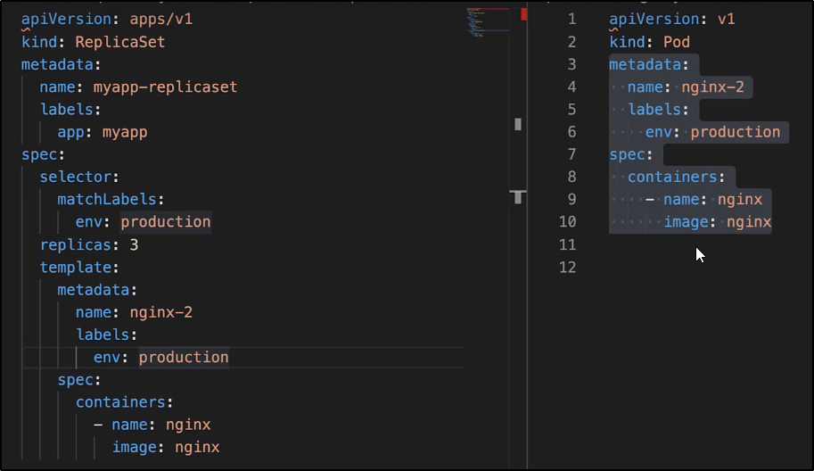

Demo - ReplicaSets
NB: Il label da usare nel POD e nel Selector devono essere gli stessi!

Una volta creati i file di configurazione dei ReplicaSets e POD, creiamo il replicaset:

Possiamo ottenere lo stato dei ReplicaSet con "kubectl get replicaset"

Per ottenere informazioni del ReplicaSet, possiamo usare "kubectl describe replicaset"

Nel caso venissero creati POD con label uguali
(nel senso: POD1.yaml e POD2.yaml con uno stesso label usato dal ReplicaSet)
verrà immediatamente terminato il POD.

Se infatti ora controlliamo quanti POD abbiamo, ne abbiamo 3:

Se proviamo a cancellare un POD ora, il ReplicaSet ne crea un altro!

Ora, per modificare il numero di POD da creare:
NB: Questo apre una schermata simile in VIM da editare su Linux ed in Notepad per Windows!
Inoltre, mostra anche gli altri parametri settati in automatico.
Qualsiasi cambiamento effettuato è immediatamente salvato ed applicato al cluster.


Possiamo scalarli anche in modo temporaneo: